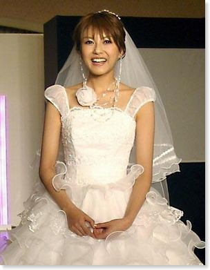
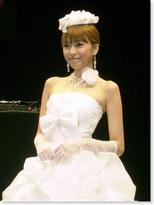

酒井彩名 ｔｅｔｓｕ 挙式 披露宴
酒井彩名 （２２）とラルク・アン・シエル のベース、ｔｅｔｓｕ （３８）が４日、東京・六本木のレストラン、ハニーズガーデン 東京 で挙式 披露宴 を行った。
酒井彩名 ｔｅｔｓｕ 挙式 披露宴
酒井彩名 （２２）とラルク・アン・シエル のベース、
ｔｅｔｓｕ （３８）が４日、東京・六本木のレストラン、
ハニーズガーデン 東京 で挙式 披露宴 を行った。
アヤナチュール のデザイナーを手掛ける
酒井彩名 は、晴れの日のためにオフホワイトのドレスをデザイン。
ハニーズガーデン 東京 で披露すると、その後の披露宴 では、
３月２０日のアヤナチュール で発表した
淡いピンクのドレスを着用した。

祝宴は両家の両親に手紙を手渡し、
酒井彩名 と ｔｅｔｓｕ は、２人そろって号泣。
ｔｅｔｓｕ が「今後とも２人を、どうぞよろしくお願いします」
とあいさつすると、温かい拍手に包まれた。

俳優の城田優（２２）やモデルの今井りか（２４）ら
親しい友人や、２人の仕事関係者が駆けつけて祝福。
午後９時半からの２次会もハニーズガーデン 東京 で行われ、
パーティーは深夜まで続いた。
▽酒井彩名 ｔｅｔｓｕ 挙式 披露宴のキーワード
▽次の記事、前の記事
羞恥心 Ｐａｂｏ 神宮で始球式 | リンジー・ローハン 飲酒運転防止の広告に起用
 ニュース 芸能ニュースカテゴリの
RSS
(Atom)
(RSS 2.0)
ニュース 芸能ニュースカテゴリの
RSS
(Atom)
(RSS 2.0)
副業 ナビ:新着記事
- うまい棒 の製造工場を全焼 : 2008年06月28日
- 「うまい棒」の製 造工場を全焼
- 携帯ビジネス でありがとうの数を増やしたい : 2008年06月28日
- 携帯ビジネス
- アルバイトもパートタイマー : 2008年06月28日
- アルバイトもパート タイマー
- 千円札は拾うな について : 2008年06月28日
- 千円札は拾うな
- 夢をかなえるゾウ に学ぶ成功哲学 : 2008年06月28日
- 夢をかなえる ゾウ に学ぶ成功哲学
- 船井幸雄 さんの成功者の3条件とは : 2008年06月28日
- 船井幸雄 さんの成功者の3条件とは
- 8月25日までに現金で30万円稼ぎたい : 2008年06月28日
- 大切なのは、素直さと 行動力
- YouTube 動画で広告収入 : 2008年06月28日
- YouTube 動画で広告収入
- 浅田真央 武豊 石川遼 は 右脳 あるいは 左脳 : 2008年06月28日
- 右脳 あるいは 左脳
- 就職 人気企業ランキング : 2008年06月28日
- 就職 人気企業ランキングがリクルートから発表
▽酒井彩名 ｔｅｔｓｕ 挙式 披露宴のレビューをブログに書く
ブログのネタに使う場合は、以下のリンクソースをブログに貼るだけでOKです。
▽酒井彩名 ｔｅｔｓｕ 挙式 披露宴にトラックバックする
酒井彩名 ｔｅｔｓｕ 挙式 披露宴のトラックバックURL:
http://www.mbportal.jp/blog/mtcompo/mt-tb.cgi/497
▽酒井彩名 ｔｅｔｓｕ 挙式 披露宴にコメントする
お気に入りに追加
(IE のみ)
今日のキーワード
当サイトのRSS
カテゴリー
- au KDDI
- DoCoMo ドコモ
- Google グーグル
- IT デジタル 家電
- SOFTBANK ソフトバンク
- word ワード の使い方
- YouTube 使い方
- YouTube 動画 画像 アート
- アルバイト 求人
- オークションサービス
- オークション用語
- ニュース 芸能ニュース
- パソコン
- ゲーム おもちゃ
- ビジネス
- ブランド
- スポーツ
- セキュリティ ウィルス
- 右脳トレーニング
- 映画 テレビ ドラマ
- 音楽 Jポップ ロック 邦楽
- 海外ニュース ゴシップ
- 韓国 ドラマ 韓国 俳優 女優 韓国 エンタメ
- 携帯アフィリエイト起業塾
- 携帯ニュース
- 在宅 サイドビジネス
- 仕事 会社
- 車 バイク 電車
- 書籍 DVD
- 速報 今日
- 天気 気象
- 派遣
- 美容 健康
- 暮らし 生活
- 本 雑誌
- 名言 名句 ことわざ
- 料理 レシピ
新着記事
- アフィリエイト ＡＳＰ 複数登録 メリット
- 高木ブー さん大腸炎で倒れる
- ユマ・サーマンが億万長者アー パッド・ブッソンと婚約 結婚
- ボーナス （お金）活用法「増やす編」
- ボーナス （お金）活用法「守る編」
- うまい棒 の製造工場を全焼
- 携帯ビジネス でありがとうの数を増やしたい
- アルバイトもパートタイマー
- 千円札は拾うな について
- 夢をかなえるゾウ に学ぶ成功哲学
- 船井幸雄 さんの成功者の3条件とは
- 8月25日までに現金で30万円稼ぎたい
- YouTube 動画で広告収入
- 浅田真央 武豊 石川遼 は 右脳 あるいは 左脳
- 就職 人気企業ランキング
- モバイル ビジネス ウェブセミナー開催
- インターネットビジネ スコミュニティー MBA
- 右脳開発 天才はメモ魔なんです
- 右脳マーケッター
- ボーナス 増加 or 減少？ お金のススメシリーズＶｅｒ２
- 副業 ナビの記事一覧
月別アーカイブ
Copyright (C) 2007 All Rights Reserved 副業 ナビ